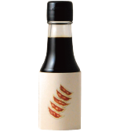
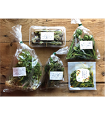
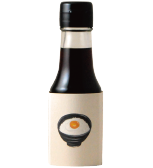

Make your life better with TAMARI.
You can get another world with Japanese food.
Have a wonderful life, and stay healthy!

SOY SOUCE No.1

MOUNT VEFE SET

SOWER SOUCE No.3
JP SOWER SOUCE No.2
MOUNT VEFE SET
TAMARIDE makes wonderful experience for you.
TAMARIDE have a lot of Japanese Flovers.
You will find the best one.
Many kind of flovers can make vourious dishes.
NOODLE with TAMARI
Slice beef into very thin strips.
Mix cornstarch, broth, soy and sugar until smooth. Set aside.
Heat 1 tablespoon oil in saucepot or wok over high heat.
Add beef in 2 batches and stir-fry until browned. Set beef aside.
Heat 1 tablespoon oil in saucepot or wok over high heat.
Add beef in 2 batches and stir-fry until browned. Set beef aside.
Add 1 tablespoon oil. Add the mushrooms, cabbage, peppers,
celery and green onions in 2 batches and stir-fry over medium
heat until tender-crisp. Set vegetables aside.
Stir cornstarch mixture and add.
Cook until mixture boils and thickens, stirring constantly.
Return beef and vegetables to saucepot and heat through.
Serve over rice.
Slice beef into very thin strips.
Mix cornstarch, broth, soy and sugar until smooth.